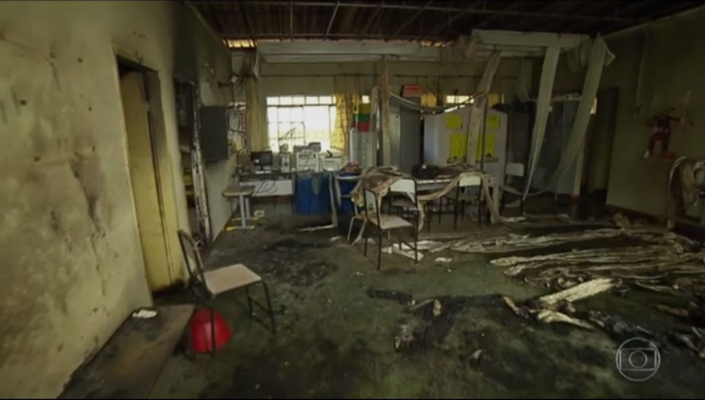

Biografia
- Pedagoga, uma das principais bandeiras de Heley era a inclusão de alunos com algum tipo de deficiência, área em que se especializou em 2016
- No dia 5 de outubro de 2017, em um reconhecido ato de bravura e heroismo,[9] Heley salvou diversas crianças durante um ataque promovido pelo vigia da creche Gente Inocente, Damião Soares dos Santos, em Janaúba, Minas Gerais, onde ela lecionava.
- Em 2005, Heley já havia perdido um filho por afogamento na piscina de um clube.
A tragédia

- Na manhã de 5 de outubro de 2017, na creche Gente Inocente em Janaúba, Minas Gerais, o vigia noturno da escola, Damião Soares dos Santos, invadiu a sala de aula portando um recipiente com combustível e ateou fogo às instalações, em várias crianças e em si mesmo
- Heley protegeu as crianças com o auxílio de outras duas funcionárias, Jéssica Morgana e Geni Oliveira (que também morreram).
- A pedagoga chegou a entrar em luta corporal com o criminoso para impedir que continuasse o ataque, e depois ajudou a retirar as crianças feridas.
- Ela teve 90% do corpo queimado e morreu no hospital, assim como as outras duas funcionárias.
- Dez crianças morreram, e também o autor do ataque, totalizando quatorze mortos.
- Após o velório, que reuniu centenas de pessoas na funerária municipal, o caixão com o corpo da professora foi colocado em uma viatura do Corpo de Bombeiros e levado em cortejo pelas ruas da cidade até o Cemitério São Lucas.
Homenagens
Ordem Nacional do Mérito
Diante do ato de bravura por ela praticado, considerado um "gesto de coragem e de heroísmo para salvar a vida de seus alunos", o então presidente Michel Temer decidiu conceder-lhe, a título post mortem, a Ordem Nacional do Mérito.
Nome em rodovia
Em razão da Lei Estadual de Minas Gerais 23.231/2019, foi dado o nome da biografada à rodovia LMG-631, entre São João da Ponte e Francisco Sá.
Medalha da Inconfidência
Em 2019 o governador do estado de Minas Gerais, Romeu Zema, decidiu homenageá-la com a Medalha da Inconfidência